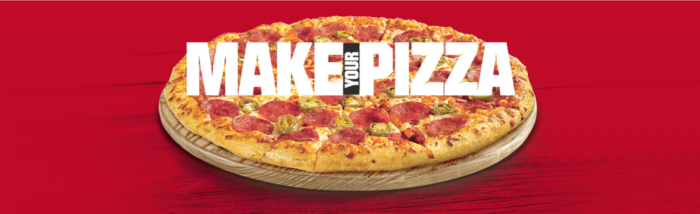

Overview
About project and Objective
We decided to redesign self-ordering TV because one of the most important
Competitive Advantages of Pizza wifi is self-ordering TV and we need to improve user
experience.
We need to be sure that our users use TV’s for ordering pizza so we gather data from
all branches.
According to the statistics obtained from July 2022 to June 2023, after orders
registered through branch cash registers, the highest volume of orders is through
the TV app.
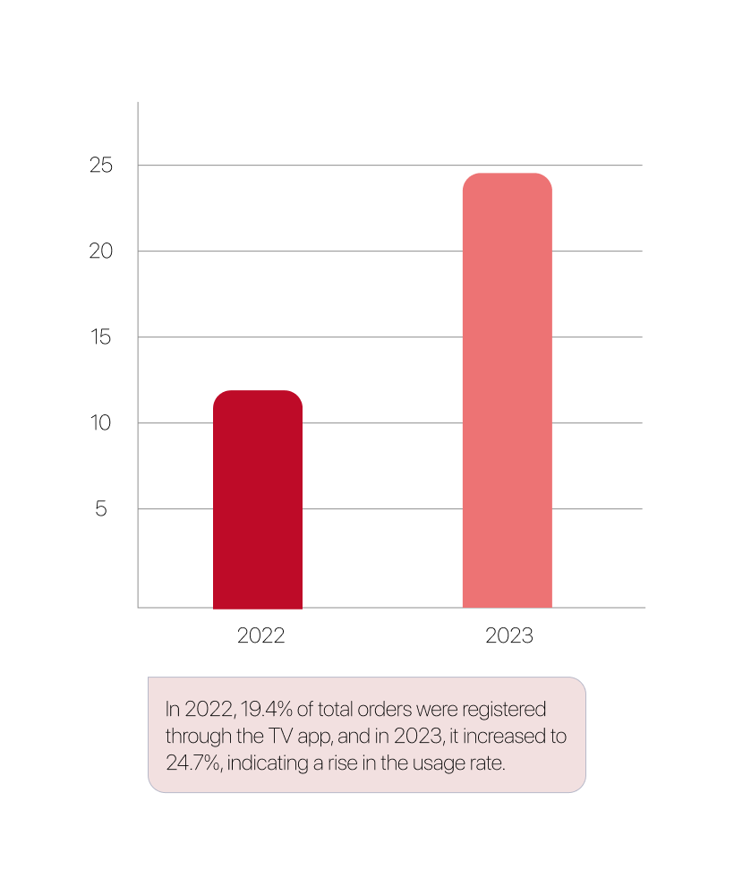
Overview
Team
We were 2 product designer on this project, by collecting data and analyzing it together. We categorized the data and discussed potential solutions to achieve our goals.
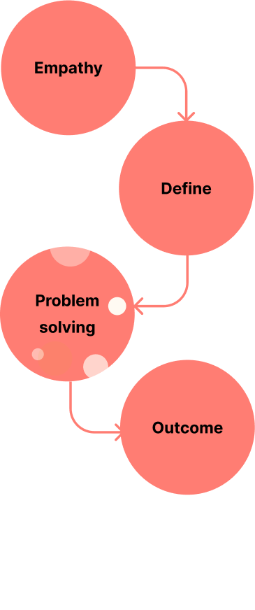
Empathy
Competitor analyzes
Convenience and Efficiency - Self-ordering screens at KFC allow customers to independently browse the menu, customize their orders, and complete transactions, reducing waiting times and streamlining the ordering process.
DisadvantagesLimited Human Interaction - Some customers may prefer the personal interaction with a human cashier and may feel that self-ordering screens lack the human touch and personalized service.
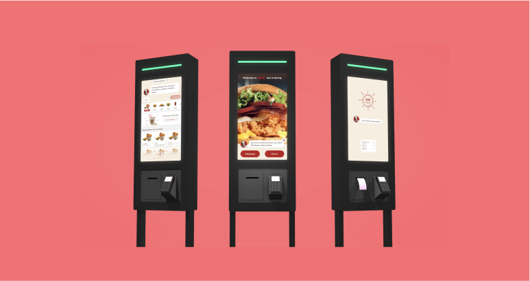
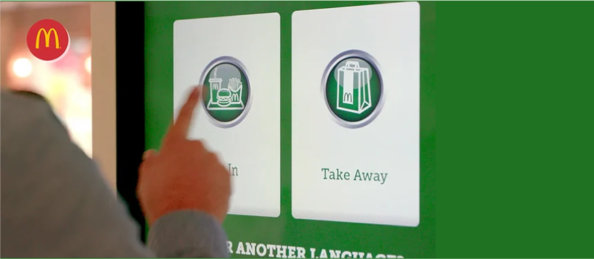
McDonald'sReduced Waiting Times - This is one of the most crucial advantages your business can benefit from. An interactive kiosk is a proven method that business owners capitalize on when it comes to reducing waiting times. Retailers who offer a self-service option have witnessed a 40% decrease in customer wait times.
DisadvantagesTechnical Issues - Like any technology, self-service kiosks can experience technical glitches, such as freezing screens or unresponsive touchscreens. These issues can frustrate customers and lead to delays in ordering.
Empathy
Interview
Managers are focused on delivering an exceptional customer experience. They need self-ordering TVs to enhance customer satisfaction, offering intuitive interfaces, clear instructions, and options for enjoyable customization
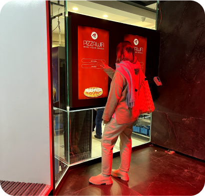
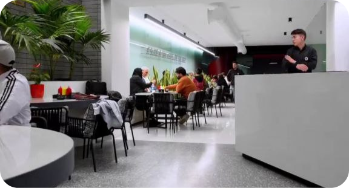
Define
Categorize Issues
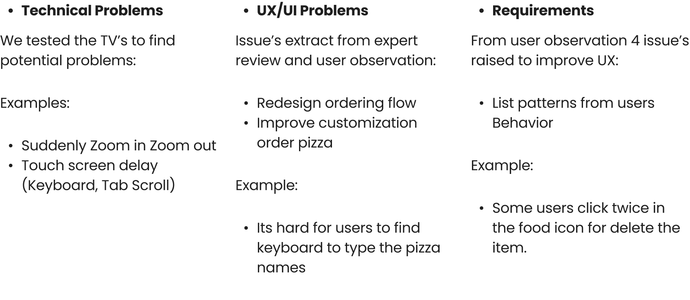
Problem solving
UX/UI Problems
Its hard for users to find keyboard to type the pizza names
Description:In this case users have to name their customized pizza, the problem is when their tap the text field keyboard shown up and users confused
Solution:The keyboard should be open immediately in this step.
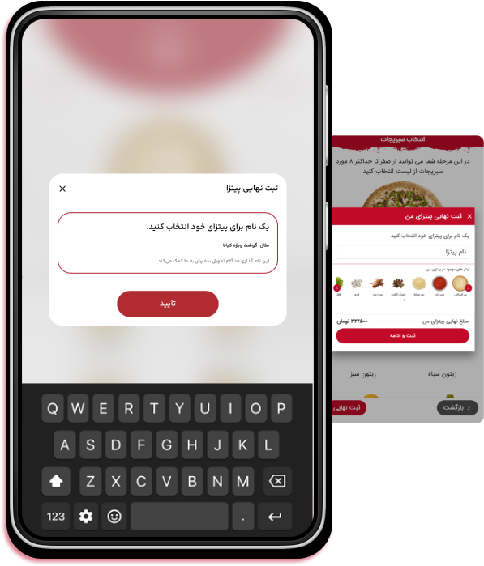
Problem solving
Requirements
Its hard for users to find keyboard to type the pizza names
Description:In this case users have to name their customized pizza, the problem is when their tap the text field keyboard shown up and users confused
Solution:The keyboard should be open immediately in this step.
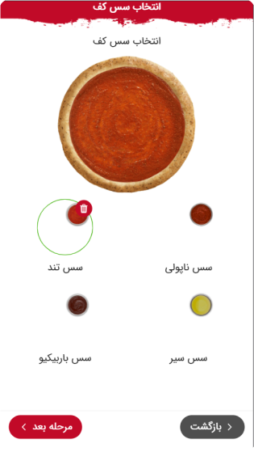
Outcome
Conclusion
We categorized about 10 issues and some of them are technical and we decided to report
them to technical team and follow up them, most of them are UX problems so we solve them
in design and handoff to product team, also, we have some users requirements that we
consider them in design
After all we decided to divide redesign to 3 parts to be Implementable:
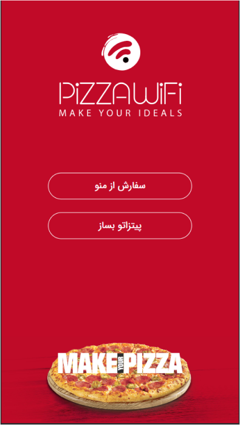